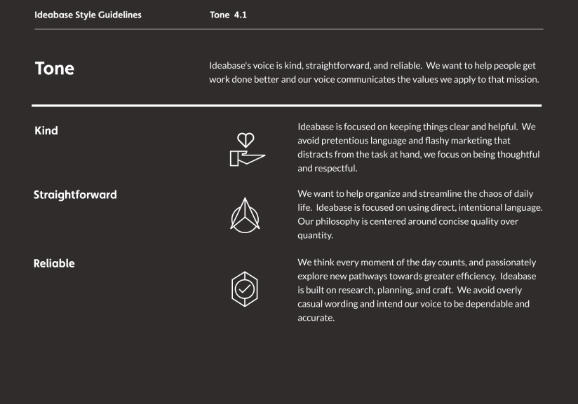
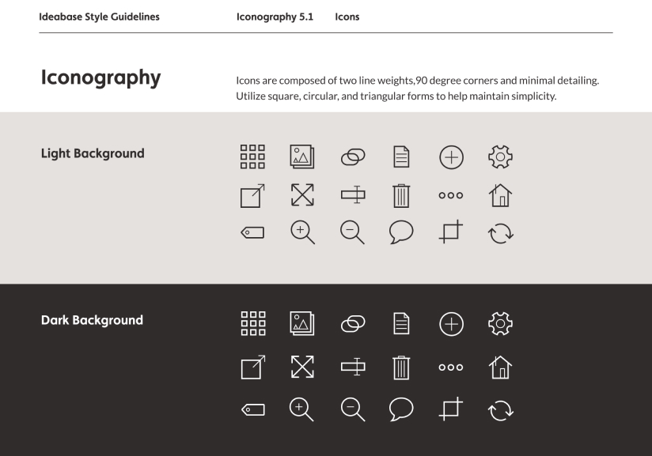
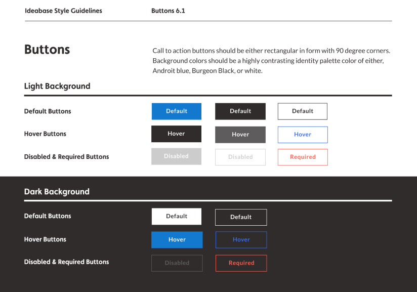
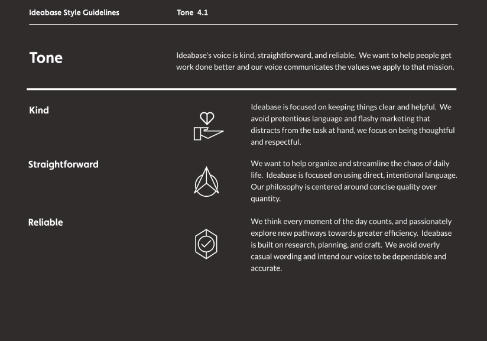
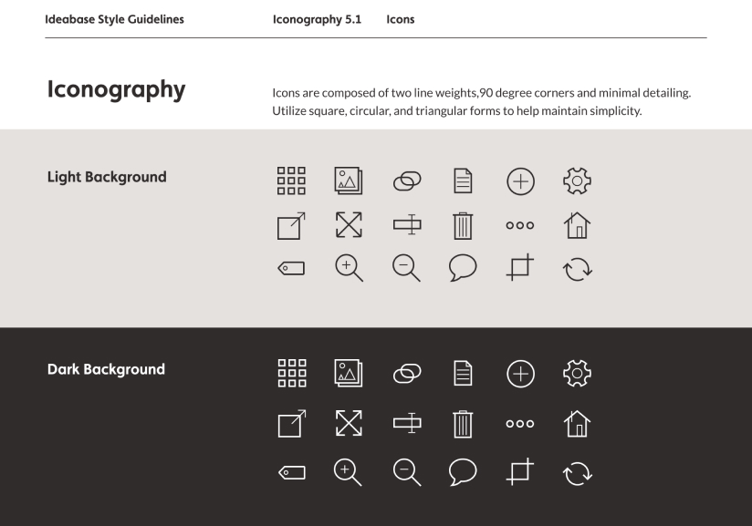
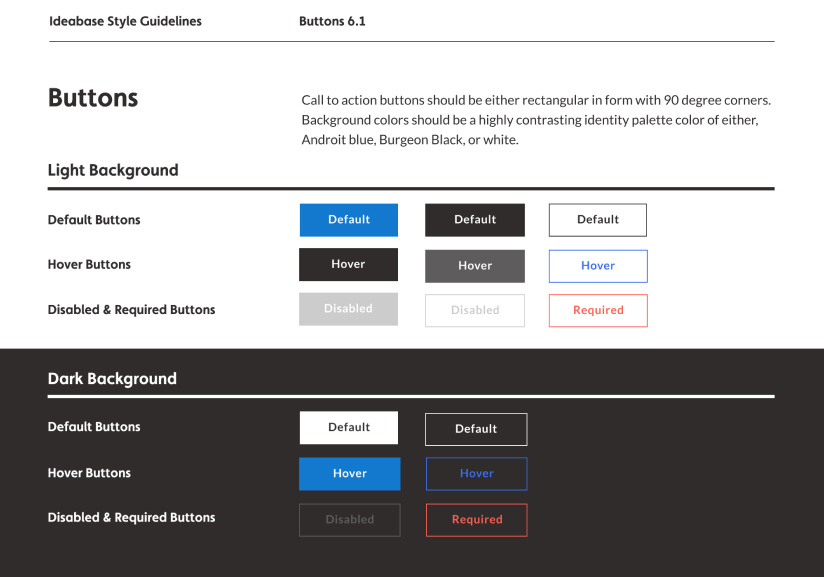

Ideabase
A web-based organization and storage system with a mission to increase efficiency by offering a simple way to showcase, save, collaborate on projects.
Overview
Role
UX, Visual Design, Branding & Identity
Tools
Figma, Balsamiq, Invision, Adobe Photoshop & Illustrator
Date
Summer 2018
Skills
Survey design, competitive analysis, ideation, user stories and flows, creating personas, conducting user interviews and observations, sketching, wireframing, prototyping, user testing & analysis
Problem
How might we design a storage system with an emphasis on organization and collaboration that is easy for users to store and showcase content?
Solution
Focused on efficiency, Ideabase offers document storage, content creation, visual organization tools, and real-time collaboration in one location. Ideabase is focused on providing a clear and intuitive storage solution. Users will be able to showcase content and support project management.
PROCESS
01 Research & Define
Competitive Analysis
User Research
02 Strategy
User Personas
User Stories
03 Information Architecture
User Flows & Sitemaps
Wireframes & Testing
04 Branding & Identity
Brand Story & Logo
Style Guide
05 Visual Design
High Fidelity Prototype
User Testing
01_Research & Define
Competitive Analysis
To better understand the cloud and productivity market, I began research and analysis on competitors like Dropbox, Evernote, and Pinterest. SWOT analysis and user flow mapping revealed gaps in current services and untapped opportunities for a new product with a focus on simplicity, visual organization, and collaboration.
User Research
Survey & Interviews
The first step was to create a survey and post to multiple public forums and social media platforms. The questions focused on defining how respondents organize and store content, use priorities, current solutions, and frustrations. The resulting data revealed opportunites to solve problems. Using respondents from the survey, I conducted interviews to refine the problem and begin to structure the solution.
Results
Currently Used Services
Most Useful Features
90%
Use cloud storage to share files or content with others.
60%
Find organizing content with tags and categories useful
90%
Felt collaboration features save time.
47%
Were frustrated with current organization tools, uploading, and saving content.
Insights
The survey responses revealed that people primarily use cloud storage to collaborate and share with others. Users are frustrated with current organization tools, the process of saving web content, and uploading files. How might a solution enable a solution that increases user efficiency and and the ability of users to collaborate?

02_Strategy
User Personas
Analyzing the survey and interview data exposed two main classes of users. These classes were utilized to create two user personas, the Visual Collaborator, and Content Coordinator.
Thom
Project Manager

Age
32 Years Old
Location
Walnut Creek, CA
Gender
Male
Goals
To quickly categorize content for searches
Multiple creation and uploading tools on all devices
Consistent features across all devices
Frustrations
Features missing on some devices
Complex process to apply specific tags to documents
Confusing file sharing and uploading without account
Motivations
Thom currently uses multiple storage platforms to store his personal and work related files. He needs to create and access notes, documents, spreadsheets, and forms from his desktop, browser, and phone. Thom works hard to keep his content organized and is frustrated with the process of searching for his files.
Audrey
Graphic Design Student

Age
26 Years Old
Location
Seattle, WA
Gender
Female
Goals
To easily share and view groups of images and files
Efficient integration with social media
Intuitive compiling of saved web content
Frustrations
Confusing to integrate stored content with social media
Ineffective image viewing features
Time consuming to organize and save web content
Motivations
Audrey spends a lot of time learning about new technology and design trends. She loves posting photos or interesting articles to her social media, and wishes it was integrated into her storage service. She currently uses Pinterest to create documents and upload files she shares with her teachers and peers.
User Stories
To establish features, I compiled research data and created a list of user stories of potential tasks of new and returning users. These user stories were refined and prioritized to define MVP.
Uploading & File Creation
Create, save and upload different types of content to view and share.
Sharing & Collaboration
Collaborate on projects with teams using chat, and share files with others.
Dashboard
Collecting the most useful and frequently used features in one spot.
Organizing Files
Tag and organize content into projects easing the process of finding content.

03_Information Architecture
User Flows & Sitemaps
While keeping the personas in mind, I began with sketching out multiple iterations of the onboarding, uploading, upgrading, organizing, and collaborating user flows. After evaluation, I distilled the process and mapped out the final flows. User flows were then used to create a sitemap and initial content strategy.
Wireframes & Testing
Using the content strategy, sitemap and user flows, I built low fidelity wireframes. After sketching a few quick iterations, I finalized the wireframes in Figma. The wireframes were used to create a clickable prototype in Invision to user test.
User Testing & Prototype
Testing was conducted in person and remotely using Skype with a test script. Feedback indicated the organize and move features needed to be redesigned to have greater visual prominence. Also, CTA’s needed to be relocated for better findability.

04_Branding & Identity
Brand Story & Logo
Developing the concept for the brand began with brainstorming and mind mapping. After conducting preference tests on two options, I decided on the name Ideabase. The brand story is inspired by the six components utilized when managing and unifying communities. Ideabase seeks to be friendly, reliable, and intelligently helpful while increasing efficiency.
The Ideabase logo is built on three concepts: an abstraction of the letters i and b, a project container housing your thoughts and ideas, and the concept of connection.
Typography
The typography was chosen to support ideas of unification and collaboration.
Colors
The main identity palette used colors that supported concepts of reliability and simplicity. Calm blue was used as the primary color and Burgeon black and secondary color.
Style Guide
All of the branding components were then assembled into a style guide to begin defining patterns and ensure the maintainability of the brand identity moving forward in the design process.
 





05_Visual Design
High Fidelity Prototype
Using the feedback from wireframe testing and branding, I created a high fidelity mockup in Figma and then converted it to a clickable prototype.
User Testing
After another round of user testing conducted remotely with Maze, I was able to identify areas of improvement and integrate into the final prototype. Here is the evolution of the dashboard from start to finish.
Dashboard Design
User tested drop-down navigation, recent and alphabetical sort feature for quicker wayfinding, and A/B tested logo color.
Add a vertical navigation bar for filtering content, changed the logo to monotone because it was a more intuitive experience between mobile and desktop.
File Viewing Design
User tested moving file location, adding comments, returning to the dashboard.
Added tag icon to ensure better findability of the tagging features.
Conclusion
Ideabase was a project that taught me the importance of testing throughout this design process. Knowing that simplicity was a priority, user testing helped me to determine when the design had crossed from obviously simple to confusing. Testing allowed for quick iteration and discovery of unidentified problems which resulted in a far improved final product and inspired a more informed solution. The refinement of responsive elements within this project developed my ability to design a better, more cohesive structure between mobile and desktop. Moving forward, my priority is to add more functionality to the organization and tagging features. Users indicated this is of high importance and would add overall value to the product beyond the MVP.